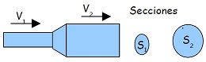

| 1.
Magnitudes fundamentales |
|
| Velocidad
La velocidad es el espacio que recorre el fluido por unidad de tiempo; se representa por una v y se mide en m/s. v=[m/seg]
Muy unido a la velocidad en los fluidos está otra magnitud denominada caudal, que es la cantidad de fluido que se desplaza por unidad de tiempo. Representamos el caudal con la letra Q y lo medimos en m3/s. Q=[m3/s].
|
Caudal y velocidad se relacionan: Q=v*s, siendo s la sección en m2/s. Supongamos la tubería de la figura. Como los caudales se tienen que mantener (Q1=Q2), entonces: |
 |
v1*s1=v2*s2 por lo que v2= v1*s1/s2. Como s2>> s1, entonces v1>>v2. Esto indica que a mayor sección, menor velocidad, y viceversa.
|
Pulsa para simular la
en una tubería.
|
La ley de la continuidad nos dice que un fluido que fluye en una tubería de sección mantiene constante su caudal.
|
|